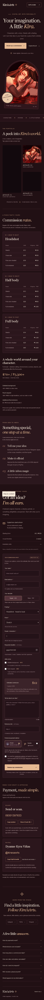

Art-first presentation
A deep burgundy palette, warm typography, and gallery layouts give the illustrations space to stand out.
An artist’s world,
with a clearer path to commission.

01 / THE IDEA
Create a home for Kira’s artwork that also makes the commission process easier to understand.
The website brings artwork, commission tiers, artist policies, and a structured order brief into one place. Visitors can explore the work first, then work out what they want to commission.
Artwork and artist brand: Kira’s Arts. This case study showcases my website design and implementation.
02 / THE EXPERIENCE
A deep burgundy palette, warm typography, and gallery layouts give the illustrations space to stand out.
Commission types, finishing styles, and the artist’s USD and Filipino pricing are presented in organized tables.
Visitors choose commission options, describe their idea, and see an estimate before reviewing the request.
03 / RESPONSIVE BY DESIGN
The layout adapts to mobile, with readable commission information and a form that stays usable on a narrow display.
This is a website prototype. It includes payment information and a Telegram handoff; automatic order delivery and payment processing are separate integrations, not verified live checkout features.

04 / THE RESULT
The finished prototype connects the artist’s visual style with the practical information a potential client needs. It demonstrates the kind of focused, responsive website I can build for creators and small businesses.
Explore website servicesHAVE SOMETHING IN MIND?
A website or custom program starts with a conversation. Tell me what you want to build.
Let’s talk